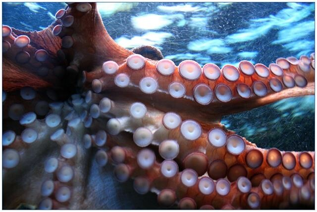
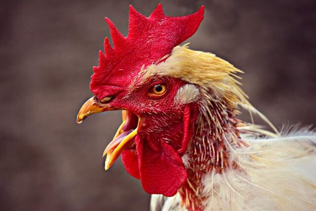
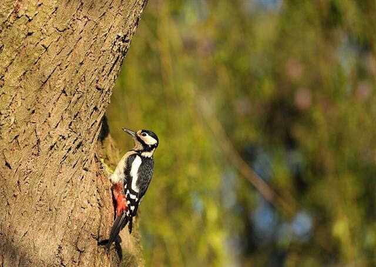
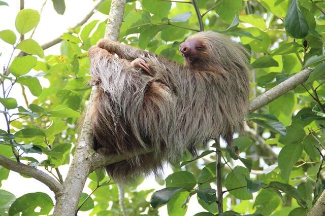
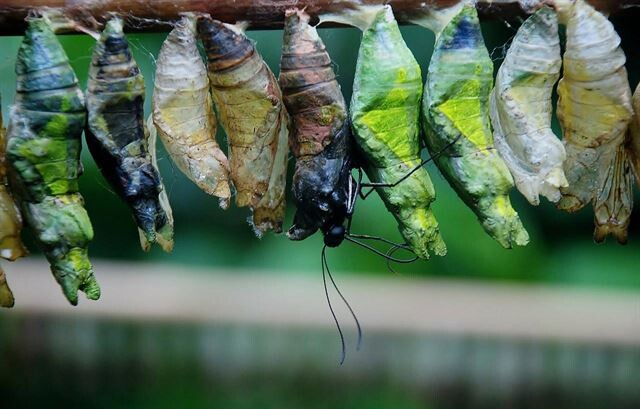

Интересные, но малоизвестные факты про животных, которые вы могли не знать
В мире существует множество удивительных существ, однако в животном мире есть много странностей, о которых многие из нас не знают.
Пять интересных фактов
-
Все мы знаем, что у осьминога 8 щупалец. У него также 3 сердца, а нервная система сформирована так, что 1/3 нейронов находится в головном мозге,

а 2/3 — в теле и конечностях, благодаря чему они могут действовать независимо от мозга. По этой причине осьминогов иногда называют существами с девятью мозгами -
Петухи временно глохнут сами каждый раз, когда кукарекают, чтобы не повредить себе слух
 -
Язык дятла заворачивается вокруг задней части мозга, что помогает мозгу оставаться защищённым во время высокоскоростного стука по дереву
Еще факты о дятлах:-
в общей сложности, дятел стучит 8000-12000 раз в день;
-
карликовые дятлы самые маленькие, их длина составляет всего 8-10см.;
-
язык дятла может достигать 10см в длину.
-
-
Ленивцы в буквальном смысле слишком ленивы, чтобы искать себе пару, поэтому самка ленивца часто сидит на дереве и кричит до тех пор, пока самец не услышит её и не решит спариться с ней
 -
Когда гусеницы входят в стадию куколки, у них не просто вырастают крылья и всё — всё их туловище сначала превращается в жидкую субстанцию, которая затем превращается в бабочку
